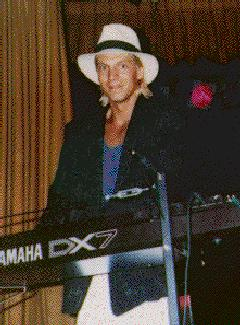
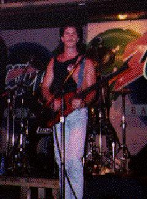

Bottoms Up
When asked the question, "What
new talent is sweeping through the Bay Area club scene?", the band Bottoms
Up quickly comes to mind. To some, it's no surprise considering the strength
of this band's line-up. Former Cast of Shadows members Andy DeFaria and
Scott Dinn have teamed up with Steve Burgio and with Steve Sampson of The
Wave to form this high energy modern rock dance band.
With each member boasting
over 10 years stage experience and a list of credentials surpassing most
local cover acts, the fan base is strong and growing. Sampson's success
in The Wave has earned him credit as a supporting act for nationals such
as Richard Marx, Bad English, and The Tubes. On the home front, DeFaria
and Dinn have performed steadily throughout the Bay Area as leading members
of the well established Cast of Shadows, and have earned a following that
has held to this day.
The music for Bottoms
Up is consistent with the demands of today's club music scene and is dynamic
and strong.
 |
 |
Andrew
DeFaria
Guitar/Vocals
Formally of Cast of Shadows |
Steve Sampson
Keybords/Vocals
Formally of The Wave
Currently in Dig This |
|  |
 |
Steve Burgio
Bass/Vocals
Formally of Nervus Rexx |
Scott
Dinn
Drums/Vocals
Formally of Cast of Shadows |
Copyright © 1998 Andrew DeFaria